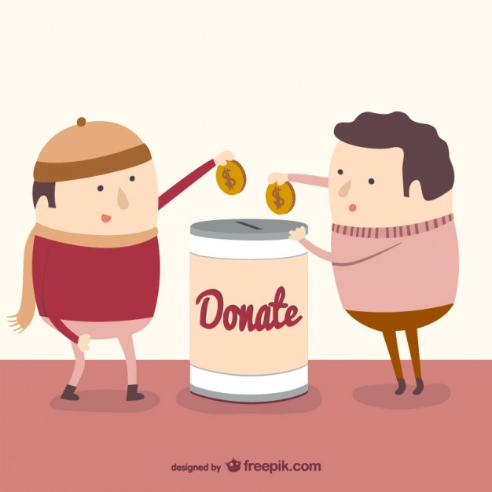
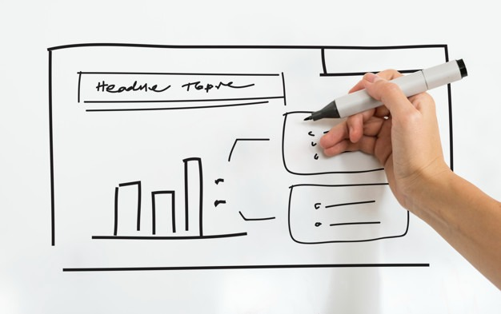
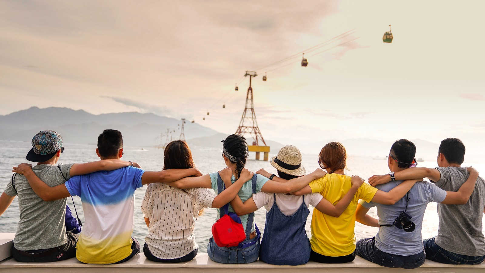

Despre Noi
Misiunea Noastră: Transformarea Comunităților Prin Voluntariat Activ
"Dăruiește Timp" își propune să creeze o schimbare semnificativă în comunități prin mobilizarea studenților în proiecte de voluntariat. Misiunea noastră este să construim punți între tineri și nevoile comunității, stimulând dezvoltarea personală și contribuind la un impact social pozitiv.
Proiecte Inovatoare: Educație, Sănătate și Sustenabilitate
Descoperiți proiectele noastre inovatoare care acoperă domenii precum educație, sănătate și sustenabilitate. De la programe educaționale pentru copii defavorizați la inițiative de mediu, ne străduim să abordăm provocările actuale și să contribuim la o schimbare durabilă în societate.
Servicii
Asistență Alimentară Disponibil
Distribuție de alimente pentru cei aflați în nevoie. Programe de educație alimentară și gătit sănătos
Proiecte de Mediu Disponibil
Campanii de ecologizare și protejare a mediului înconjurător. Activități de plantare a arborilor și conservare a resurselor naturale.
Activități Culturale și de Recreere Disponibil
Evenimente și activități culturale pentru a promova diversitatea. Programe de recreere și divertisment pentru toate vârstele.
Asistență Socială Disponibil
Consiliere și suport emoțional pentru persoanele aflate în dificultate. Program de intervenție în caz de crize sau dezastru.
Contact
Ne puteți contacta oricând în unul din următoarele moduri:
1.Telefonic
Apelând cu încredere la: 0754111333
2.Prin Email
Ne găsiți ușor la adresa: daruieste-timp@ong.ro